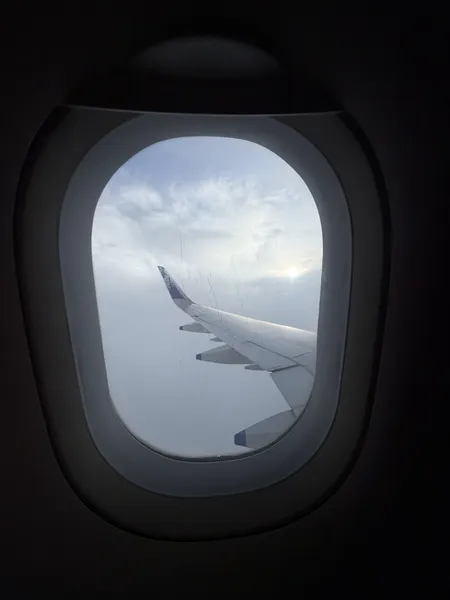

Day 1
The Mountain Calling
Flight - CarDescription: Flew from Bangalore to Chandigarh, then hit the road to Shimla by cab. Day 1 was all about getting to the base point, settling in, and getting ready for the adventure ahead.
Notes: Add up a meal in the flight or else you have to juggle between reaching on time or getting a food somewhere.
Links: Restaurant Link